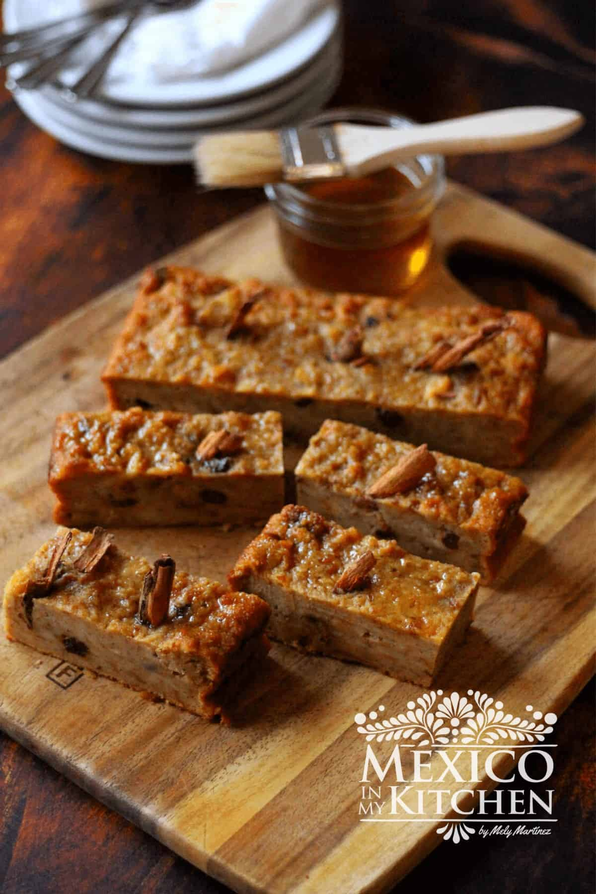

Recipe

What Is Budin?
Another popular dish not only in El Salvador, but in many other latin countries, budin is essentially banana bread pudding.
Ingredients
- Banana
- Bolio
- Milk
- Vanilla Extract
Steps
- First mix all the ingredients
- Pour batter onto a pan to bake in
- Bake
- Remove form oven and allow it to cool down
- Enjoy